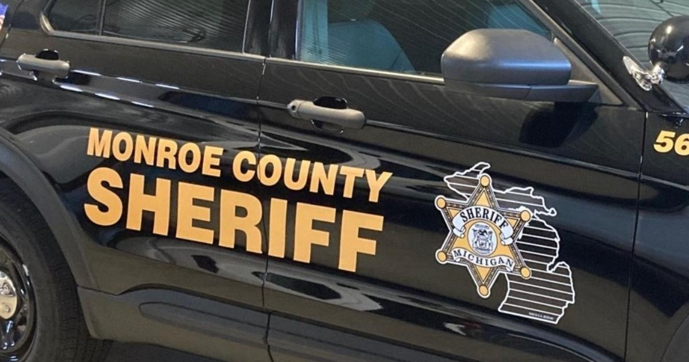

Deputies investigate fatal crash in French TownshipMONROE COUNTY, Mich. (CBS DETROIT) - The Monroe County Sheriff's Office is investigating a fatal crash. The crash on Jan. 29 happened on N. Monroe Street, north of Santure Road in French Township around 2 a.m. Investigations show, Dale Biniecki, 68, of Monroe, was operating a 2019 Freightliner tractor-trailer southbound on N. Monroe Street in the right lane. While operating, Biniecki's tractor hit Rory Tobin, 33, of Newport who was walking within the travel lane wearing dark clothing, deputies said. After the crash, Tobin was hit again by Caiden Kopsi, 19, of Monroe who was driving a 2003 Ford Mustang in the southbound left lane, investigators said. Biniecki's tractor-trailer stopped on the southbound shoulder of the roadway. Kopsi's Ford stopped in a private driveway, north of the crash scene. Tobin died at the scene and was found in a left lane southbound on N. Monroe Street, deputies said. Biniecki and Kopsi were not injured. Alcohol is not a factor in the crash, according to the sheriff's office. Anyone with information can call 734-240-7557 or anonymous tips can be called to Crime Stoppers at 1-800-speakup. for more features. |
 |